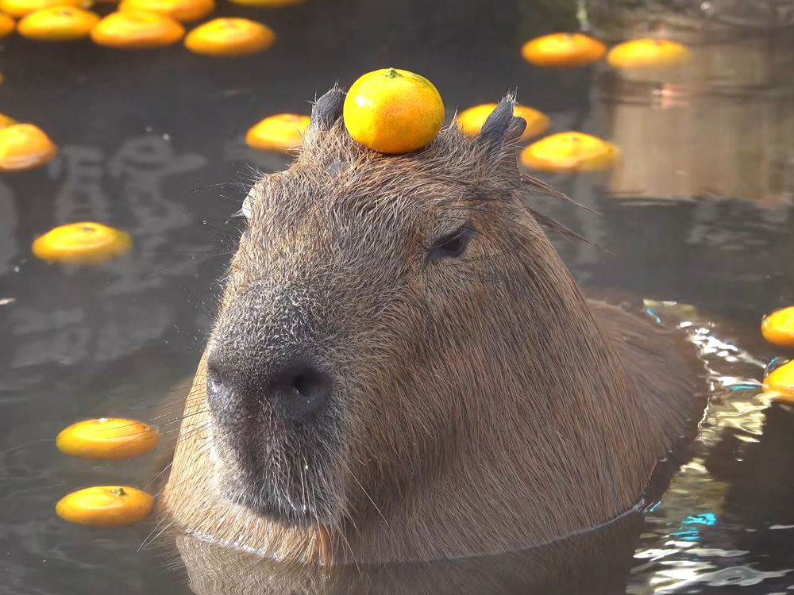

Самый крупный в современном мире грызун, который ведёт полуводный образ жизни и никогда не отходит далеко от озёр, болот и рек.
Этот вид широко распространён в Южной и Центральной Америке. Слово «капибара» с языка индейцев гуарани (группы народов Южной Америки) переводится как «господин трав».
Капибары прекрасно плавают и ныряют. В воде они проворные и грациозные, а по суше передвигаются неловкой и шаркающей походкой. Однако при опасности эти звери могут развить скорость до 30 километров в час, чтобы добежать до водоёма и спрятаться.
В дикой природе капибары питаются сеном, клубнями, травой и водными растениями.
Нажми на меня! Здесь больше про капибар